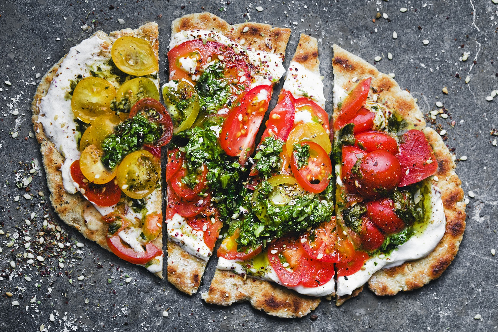
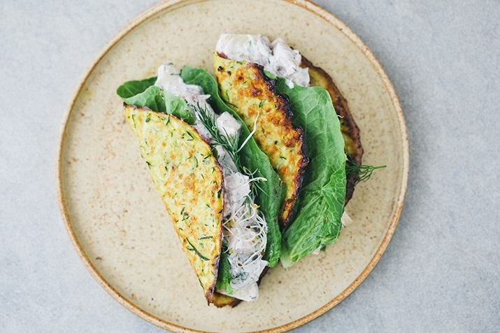
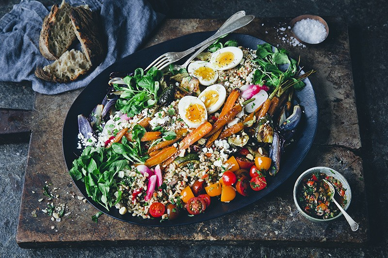
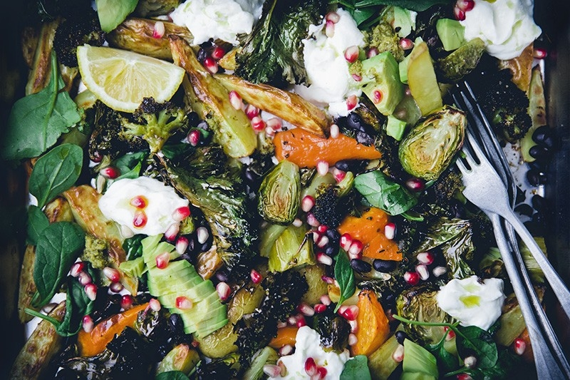
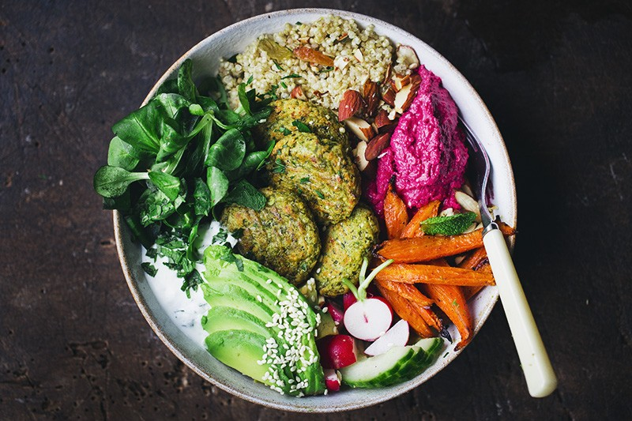
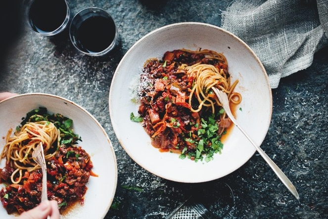

Oat & Yogurt Flatbread with Green Sauce and Tomatoes
Sure, sourdough bread tastes good and is a fun little hobby and all that. But it takes forever to make and you need to give the starter more love than all your family members combined. Our flatbreads are lightyears easier and quicker, taste awesome, only have two main ingredients and flour is none of them.

Time: 25 mins

Serves 4
Danish Summer Tacos
Here is an unconventional but yet great taco recipe that we want you to try. It includes making tortillas from grated zucchini/courgette and filling them with a creamy and crunchy yogurt, cucumber and potato salad. Think of it as a light and summery take on tacos that probably will drive taco conservatives mad but make the rest of us happy.
Time: 1 hour
Serves 6
Roasted Veggie Grain Platter
There is one obvious reason why grain bowls have become so popular in the last couple of years. Their looks. If you don’t know what a grain bowl is, it’s basically a mix of roasted and raw vegetables on a bed of grains and herbs arranged in a bowl. The mix of vegetables often make these bowls super colorful and therefore also very popular on instagram. Grain bowls are however more then just pretty.
Time: 1 hour
Serves 4
Veggie Tray Extra Everything
We cannot get enough of tray bake dinners in our family. They are simply one of the easiest and most delicious weekday solutions we know and this recipe represents much of what we love about food. Easy to make, easy to like, easy to adapt. It combines warm and cold and sweet and savory.
Time: 1 hour
Serves 4
Green Pea Falafel Bowl
Simple, baked, packed with fresh herbs and hold together excellently. If you don’t serve it with the mint yogurt, it is also vegan. We subbed the pistachios with some pumpkin seeds/pepitas this time and replaced half of the chickpeas with green peas to make them more suited for spring.
Time: 1 hour
Serves 4
Black Lentil & Vegetable Bolognese
We use black lentils as they stay intact in the sauce. The lentils work as replacement for the meat in the classic bolognese ragu – they both add protein and have a nice and soft, chewy consistency. We combine chopped and grated carrots to get a mix of textures. You can of course add more veggies if you prefer. We kept it simple and used what we had at home.
Time: 1 hour